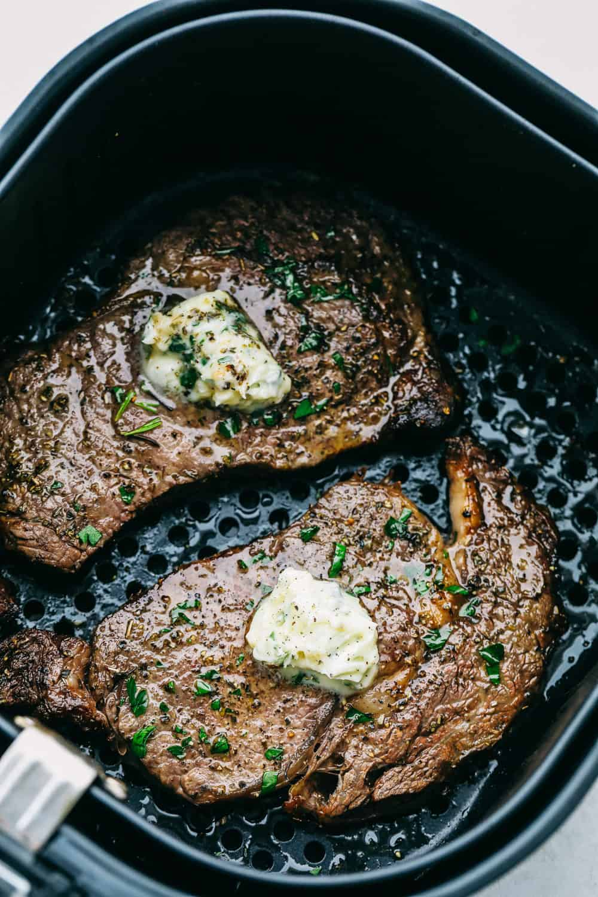

Air Fried Steak Recipe

Description
This Air Fryer Steak is impeccably seared on the outside and tender juicy
on the inside. Cooking steak in an air fryer will create extra flavor
and a delicate texture to truly satisfy everyone in your family!
Ingredients
- Steak: Ribeye, New York or Tri Tip about 1 inch thick
- Oil: I used Olive oil for its mild flavor
- Italian Seasoning: Such a classic seasoning that tastes so good.
- Salt and Pepper: To taste
Steps
- Preheat and Prepare: Preheat fryer 400 degrees. Rub the steaks with oil on each side. Rub the Italian seasoning and salt and pepper o
- Fry: Put the steaks in the fryer and cook for 12 minutes, flipping half way through. Let it rest for 10 minutes and top with the garlic butter.